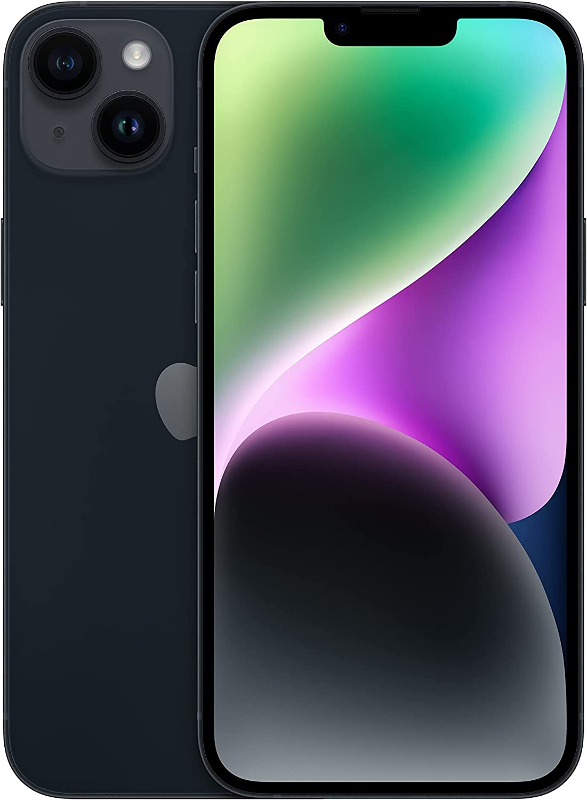
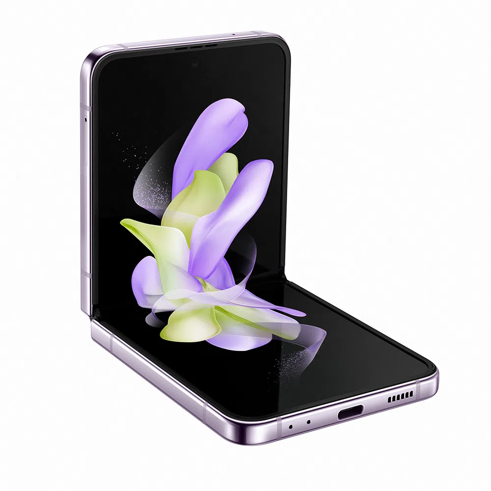

-
Iphone-14plus

Apple iPhone 14 Plus (128 GB) – Cinza-Escuro
Sobre este item
Tela Super Retina XDR de 6,7 polegadas
Sistema de câmera avançado para fotos melhores em qualquer luz
Modo Cinema, agora em 4K Dolby Vision até 30 qps
Modo Ação para vídeos em movimento com mais estabilidade
Tecnologia de segurança — Detecção de Acidente3, que liga para a emergência se você não puder
Bateria para o dia todo e até 26 horas de reprodução de vídeo
Chip A15 Bionic com GPU de 5 núcleos para um desempenho impressionante. Rede celular 5G ultrarrápida
Durabilidade líder na indústria com Ceramic Shield e resistência à água
iOS 16, com ainda mais maneiras de personalizar, se comunicar e compartilhar
-
Iphone-14proMax

Apple iPhone 14 Pro (256 GB) – Roxo-profundo
Sobre este item
Tela Super Retina XDR de 6,1 polegadas com tela Sempre Ativa e ProMotion
Dynamic Island, uma nova forma de interação no iPhone
Câmera grande-angular de 48 MP para resolução até 4x maior
Modo Cinema, agora em 4K Dolby Vision até 30 qps
Modo Ação para vídeos em movimento com mais estabilidade
Tecnologia de segurança — Detecção de Acidente, que liga para a emergência se você não puder
Bateria para o dia todo e até 23 horas de reprodução de vídeo
A16 Bionic, o máximo em chip para smartphone. Rede celular 5G ultrarrápida
Durabilidade líder na indústria com Ceramic Shield e resistência à água
iOS 16, com ainda mais maneiras de personalizar, se comunicar e compartilhar
-
Moto G42

Smartphone Samsung Galaxy S22 Ultra 5G, 256GB, 12GB RAM, Tela Infinita de 6.8" Preto
Smartphone Samsung Galaxy S22 128GB Preto 5G 8GB
Tenha todos os seus compromissos e aplicativos úteis na palma da sua mão, sem deixar nada para trás com o S22 Galaxy da Samsung. Seu processador Octa-Core Snapdragon 8 Gen 1 e memória RAM de 8GB permite que o seu smartphone funcione da melhor maneira possível e com total fluidez, evitando os indesejáveis travamentos nos aplicativos enquanto sua câmera traseira tripla de 50MP + 10MP + 12MP permite que você registre fotos maravilhosas dos seus momentos mais que especiais com amigos e família. Se você é fã de redes sociais, vai adorar compartilhar suas melhores selfies com a câmera frontal de 10MP, mesmo com baixa luminosidade, graças às atualizações revolucionárias da câmera traseira e da câmera de selfie. Cada uma captura mais luz para cores e detalhes incríveis para que você possa dominar o modo retrato com as luzes baixas.
-
Sansung-Flip

Smartphone Samsung Galaxy Z Flip4 5G, 256GB, 8GB RAM, Tela Infinita de 6.7" Violeta
Cabe no seu estilo
Resistente à água e a quedas inesperadas
O dobrável mais querido, com a bateria que você queria
-
Samsung s22

Smartphone Samsung Galaxy S22 Ultra 5G, 256GB, 12GB RAM, Tela Infinita de 6.8" Preto
Smartphone Samsung Galaxy S22 128GB Preto 5G 8GB
Tenha todos os seus compromissos e aplicativos úteis na palma da sua mão, sem deixar nada para trás com o S22 Galaxy da Samsung. Seu processador Octa-Core Snapdragon 8 Gen 1 e memória RAM de 8GB permite que o seu smartphone funcione da melhor maneira possível e com total fluidez, evitando os indesejáveis travamentos nos aplicativos enquanto sua câmera traseira tripla de 50MP + 10MP + 12MP permite que você registre fotos maravilhosas dos seus momentos mais que especiais com amigos e família. Se você é fã de redes sociais, vai adorar compartilhar suas melhores selfies com a câmera frontal de 10MP, mesmo com baixa luminosidade, graças às atualizações revolucionárias da câmera traseira e da câmera de selfie. Cada uma captura mais luz para cores e detalhes incríveis para que você possa dominar o modo retrato com as luzes baixas.